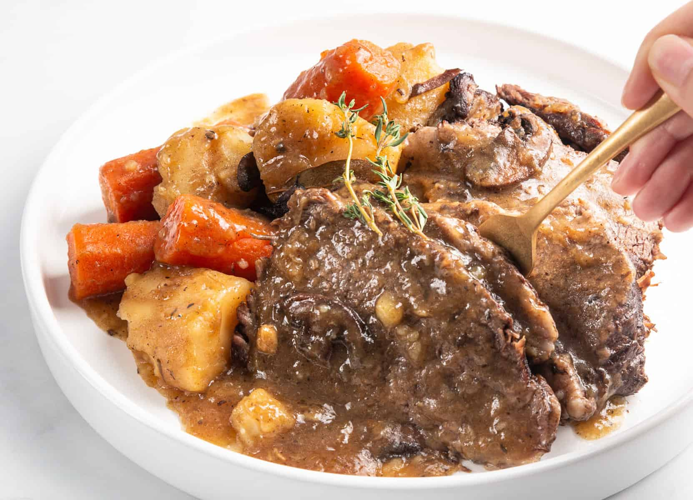

Pressure Cooker Pot Roast

This is an easy-to-make savory and delicious meal giving us a tender beef.
Ingredients
- 2 tablespoons of vegetable oil
- A 3-pound trimmed boneless beef chuck roast
- Black pepper, salt, and onion powder
- 4.5 ounces of store-bought or homemade beef broth
- 1 1/2 tablespoons of Worcestershire sauce
- 1 Onion
- 4 Carrots
- 4 Potatoes
Steps
- Heat the oil in the pressure cooker and sear the meat on all sides.
- Season the roast with a pinch of each of the seasonings, then add the broth, sauce, and onion. Seal the lid.
- Reduce the heat to low and cook on full pressure for 30 minutes.
- Lower the pressure, add the carrots and potatoes after cutting them, and seal the lid.
- Return to full pressure and cook for 15 more minutes.
Return to Homepage